Olá! Sou
Alexsandro Rodrigues da Silva
Mecânico Automotivo
Certificando SENAI 2027
Serviços por Agendamento
Sábados e Feriados,
das 7h às 19h.
Em domicílio (81) 9 9809-0037.
Ou no nosso endereço.
Minha playlist
- Adonai - Petra
- Angel of Light - Petra
- Back to the Rock - Petra
- Bema Seat - Petra
- Better - Oficina G3
- Clean - Petra
- De Joelhos - Oficina G3
- Depois da guerra - Oficina G3
- Grave Robber - Petra
- Meus Passos - Oficina G3
- Meus Próprios Meios - Oficina G3
- Muros - Oficina G3
- Obediência - Oficina G3
Meus Serviços
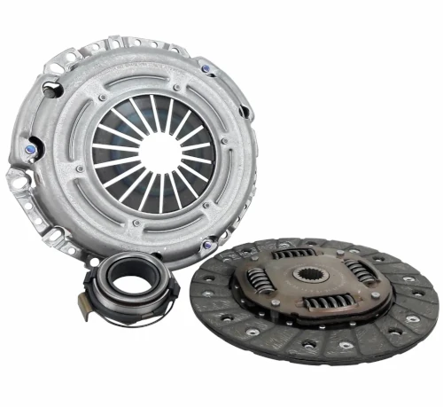
Embreagens
Quando substituir?
1. Embreagem deslizando; sem força para arrancar ou subir ladeiras, trepidação.
2. Quebra do colar ou da mola membrana; barrulho extranho.
3. Vazamento de óleo pelo atuador ou bomba auxiliar; sem pressão no pedal.
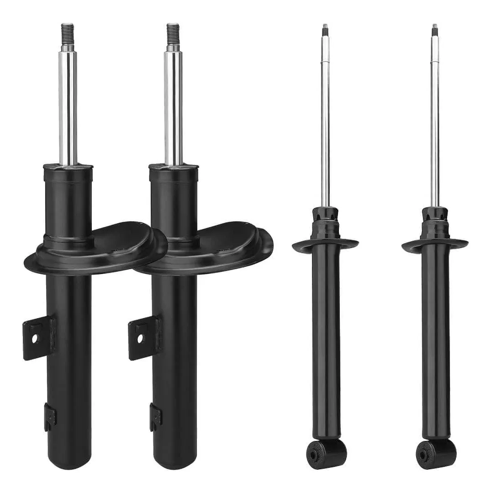
Amortecedores
Quando substituir?
1. Perda da compressão; vazamento do óleo, suspensão "solta" do veículo.
2. Travamento; suspensão "travada" do veículo.
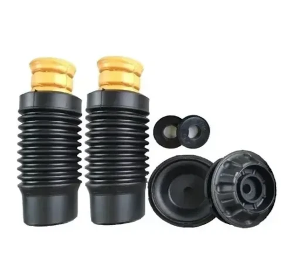
Coxins e batedores
Quando substituir?
1. Desgaste do batedor; esfarelamento.
2. Desgaste do coxin; barrulho extranho no final da aste do amortecedor.
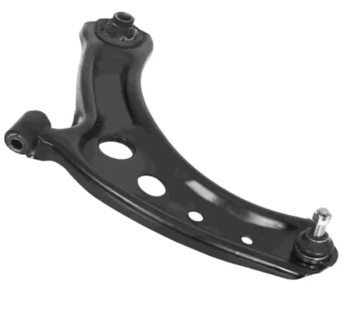
Bandejas
Quando substituir?
1. Buchas estragadas.
2. Pivô com folga; necesário elevação do veículo.
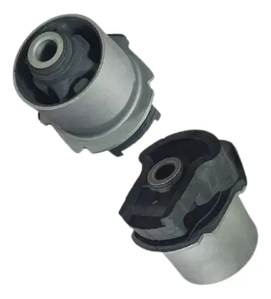
Buchas do eixo traseiro
Quando substituir?
1. Buchas estragadas; necesário elevação do veículo.
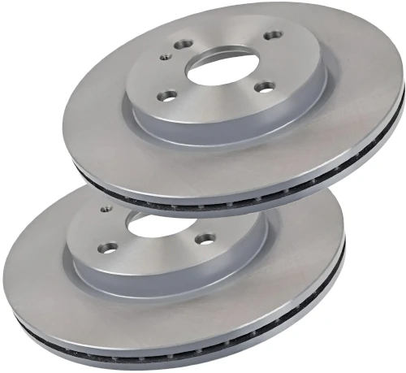
Discos de Freio
Quando substituir?
1. Desgaste execivo; as paredes do disco ficam mais finas e com irregularidades. É possível retificar
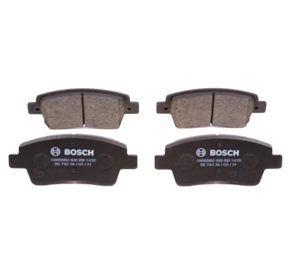
Pastilhas de freio
Quando substituir?
1. Desgaste natural; é comum ouvir um barulho metálico (limitador) quando estão no momento da troca. Algumas possuem um sensor eletrônico.
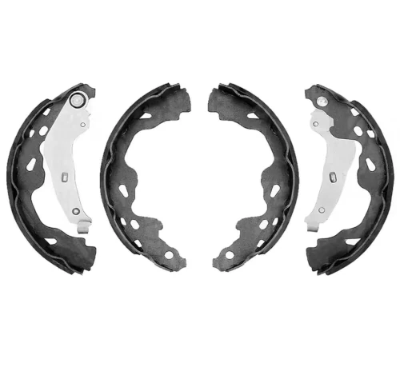
Lonas de freio
Quando substituir?
1. Desgaste natural; o freio de mão fica aparentemente desrregulado ou não segura o veículo.
2. Relação 2x1 em função da troca das pastilha; trocar na segunda troca das pastilhas.
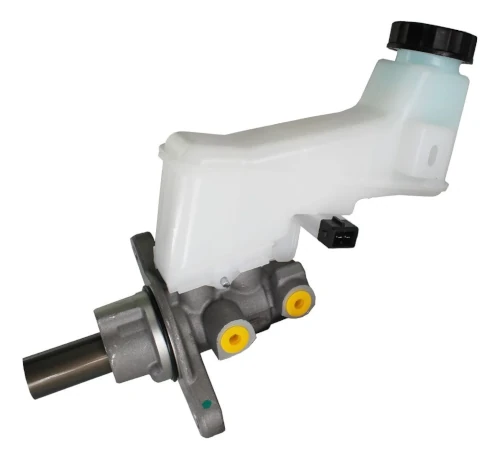
Cilindro mestre
Quando substituir?
1. Desgaste de o'rings e vazamento de fluído; o pedal de freio fica sem pressão, quase encostando no açoalho. É possível ver um vazamento de fluído de freio.
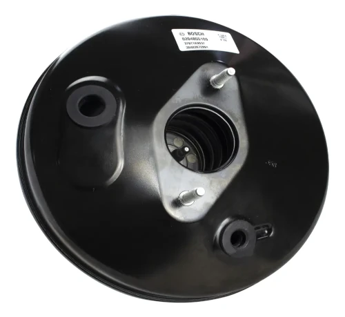
Servo freio
Quando substituir?
1. Pedal do freio fica "pesado"; é necessário mais esforço para frear. É possível ouvir um barulho de ar escapando, também pode ocorrer alteração na marcha lenta do motor.
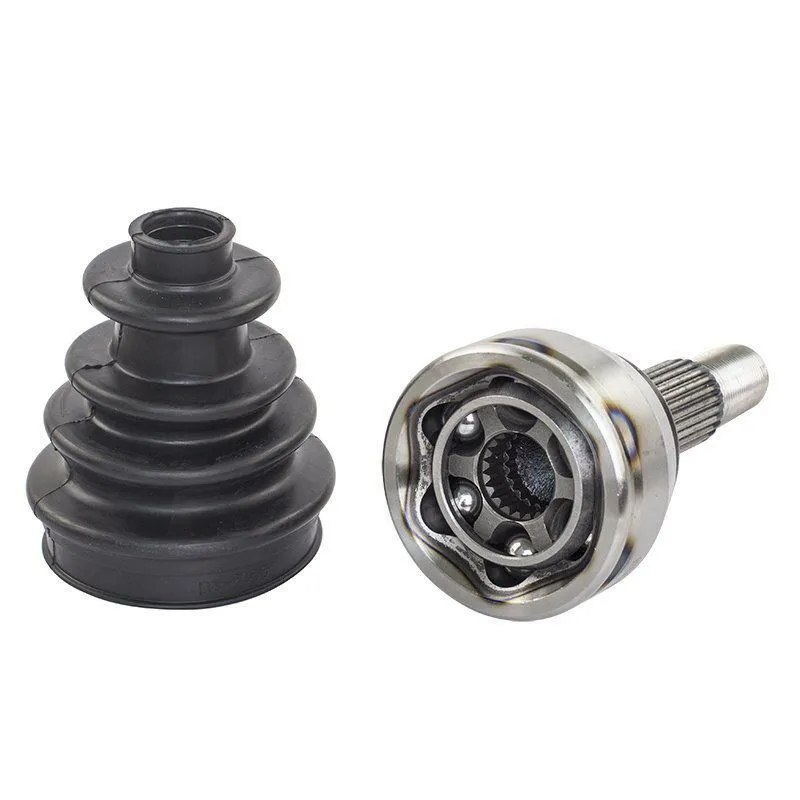
Junta homocinética
Quando substituir?
1. Barulho de "estalo" ao esterçar a direção; o barulho é mais evidente quando numa curva em velocidade lenta.
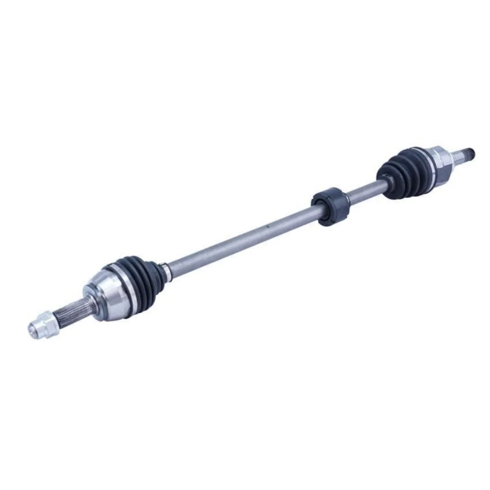
Eixo completo
Quando substituir?
1. Barulho de "estalo" ao esterçar a direção ou quando em linha reta em média velocidade.
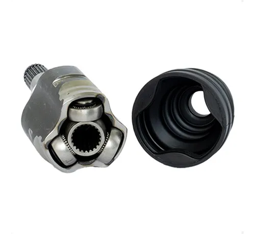
Deslizante e trizeta
Quando substituir?
1. Barulho de "estalo" quando em linha reta em média velocidade.
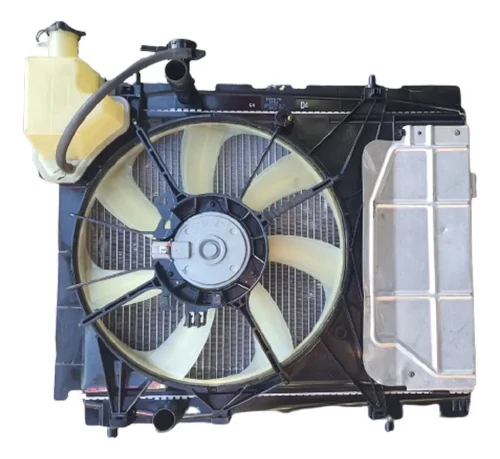
Kit radiador
Quando substituir?
1. Furo no radiador ou no recipiente de expansão.
2. Defeito na tampa no recipiente de expansão.
3. Mal funcionamento do eletro ventilador.
4. Elevação da temperatura do motor.
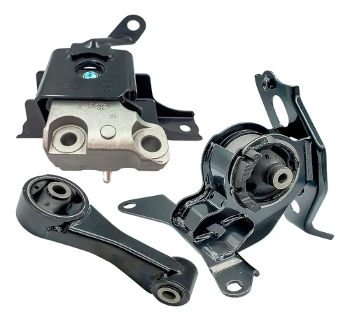
Coxins do motor
Quando substituir?
1. Desgaste das borrachas.
2. Balanço excessivo do motor ao arrancar ou na marcha ré.